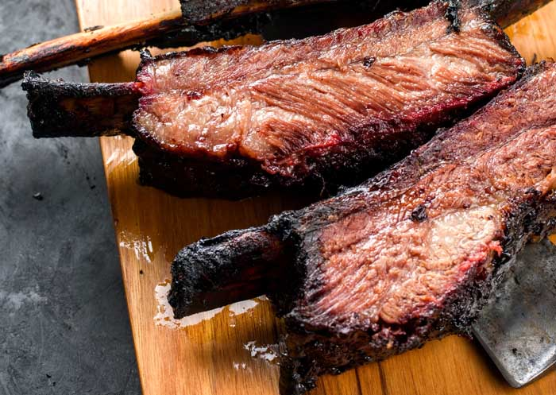

Tira de Asado

This main course is very common in Argentina, and it is very simple to prepare it, but if you go to the country,
it's not only cooking the meat, for them Asado, is a moment for spending time with their family drinking wine or
their famous Fernet con Coca (A very typical drink consisting of Fernet Branca mixed with Coca-Cola).
Ingredients
- 1 cup sea salt or kosher salt
- 6 lbs beef ribs
Instructions
- Preheat a grill to medium heat. Lightly oil the grate. Asado is traditionally cooked on a fire grill
- Rub the ribs with a heavy dose of salt to bring out the fat.
- Grill the ribs for 40 minutes on the bone side.
- Then grill the ribs for 15-20 minutes on each side.
- Serve immediately.
- Additionally you can use chimichurri as a topping to add taste to the meat.